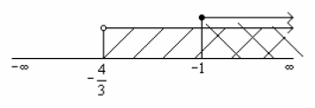

U rešavanju logaritamskih jednačina koristimo definiciju $\log_{a}b=x \Leftrightarrow b=a^{x}$ i pravila za logaritamsku funkciju.
$\log_{3}( 2x+3)=2$
$\log_{3}( 2x+3)=2$
$2x+3=3^{2}$
$2x=9-3$
$2x=6$
$x=3$
Uz uslov da je $2x+3>0$ tj. $2x>-3$ tj. $x>-\dfrac{3}{2}$.
Pošto je $3>-\dfrac{3}{2},$ ovo rešenje je dobro.
$\log_{2} (x-1) + \log_{2} (x+2)=2.$
$\log_{2}( x-1) + \log_{2} (x+2)=2$
$\log_{2} (x-1)(x+2)=2$
$(x-1) \cdot (x+2)=2^{2}$
$x^{2}+2x-x-2=4$
$x^{2}+x-6=0$
$x_{1,2}=\dfrac{-1 \mp \sqrt{1+24}}{2}$
$x_{1}=2, x_{2}=-3$
Uz uslov da je $x-1>0$ tj. $x>1$ i $x+2>0$ tj. $x>-2$.
Rešenje $x_{1}=2$ zadovoljava uslove, ali rešenje $x_{2}=-3$ ne zadovoljava uslov $-3>-2$. Dakle jedino rešenje je $x=2$.
$(\log x)^{2}-3 \cdot \log x+2=0.$
$(\log x)^{2}-3 \cdot \log x+2=0$
Uvodimo smenu $\log x=t$ uz uslov $x>0$
$t^{2}-3t+2=0$
$t_{1}=2$ i $t_{2}=1$
$ \log_{10} x=2 \rightarrow x=10^{2}=100$
$\log_{10} x=1 \rightarrow x=10$
$\log (7-2^{x}) - \log (5+4^{x}) + \log 7=0.$
$\log (7-2^{x}) - \log (5+4^{x}) + \log 7=0$
$\log_{10} (7-2^{x}) \cdot 7=\log_{10} (5+4^{x})$
$(7-2^{x} ) \cdot 7=5+4^{x}$
$49-7 \cdot 2^{x}-5-(2^{2})^{x}=0 \rightarrow$ smena $t=2^{x}$
$-t^{2}-7t+44=0$
$t_{1}=4, t_{2}=-11$
$2^{x}=4=2^{2} \rightarrow x=2$
$2^{x}=-11 $ nema rešenja
Uslovi su $7-2^{x}>0$ i $5+4^{x}>0$, a rešenje $x=2$ koje ih zadovoljava.
$x^{1+ \log_{3} x}=3x.$
$x^{1+ \log_{3}x}=3x / \log_{3}$
Logaritmujemo obe strane za odgovarajuću osnovu
$\log_{3} x^{1+ \log_{3}x}=\log_{3} 3x $
$(1+ \log_{3} x ) \log_{3} x= \log_{3} 3 + \log_{3} x$
Uvodimo smenu $t= \log_{3} x$
$(1+t)t=1+t$
$t+t^{2}-1-t=0$
$t^{2}-1=0$
$t_{1}=1, t_{2}=-1$
Vraćamo smenu $ \log_{3} x=1 \rightarrow x=3$ i $\log_{3} x=-1 \rightarrow x=\dfrac{1}{3}.$
Kod rešavanja logaritamskih nejednačina koristimo pravila za logaritme, ali
1. Kada je $a>1$ prepisujemo znak nejednakosti jer je funkcija rastuća
2. Kada je $0< a <1$ menjamo znak nejednakosti jer je funkcija opadajuća.
Kada da rešavamo logaritamsku nejednačinu prvo odredjujemo uslove u kojima postoje rešenja, pa onda rešavamo i trazimo preseke rešenja sa uslovima.
$\log_{2} (3x+4) \geq 0$
$\log_{2} (3x+4) \geq 0$
Uslov: $3x+4>0$ tj. $3x>-4$ tj. $x>-\dfrac{4}{3}$
$3x+4 \geq 2^{0}$
$3x \geq 1-4$
$3x \geq -3$
$x \geq -1$
$x \in [1,+\infty)$
$\log_{0,5} (x+6)> \log_{0,5} (x+8).$
$\log_{0,5} (x+6)> \log_{0,5} (x+8)$
Uslovi $2x+6>0$ tj. $2x>-6$ tj. $x>-3$ i $x+8>0$ tj. $x>-8$, pa zajedno daju $x>-3$.
$2x+6 < x+8 \rightarrow$ menja se znak jer je $0,5 < 1$.
$x < 2$
Presek sa uslovima daje $x \in (-3,2)$